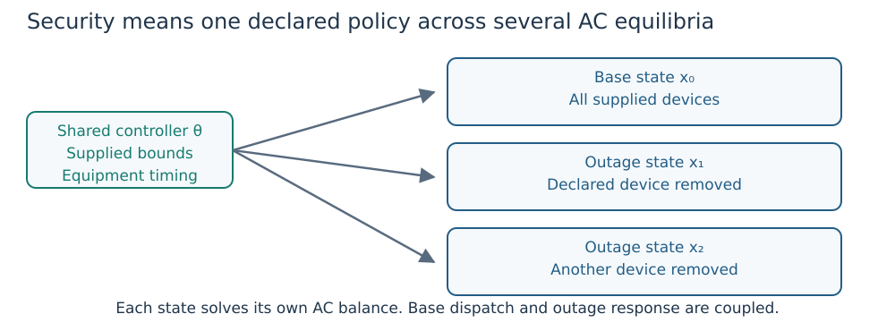
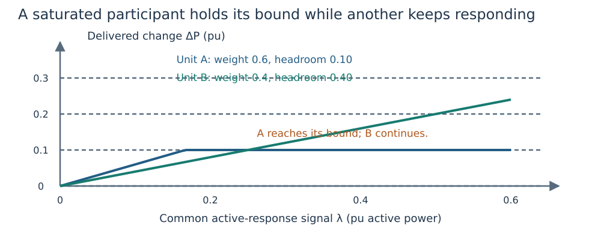
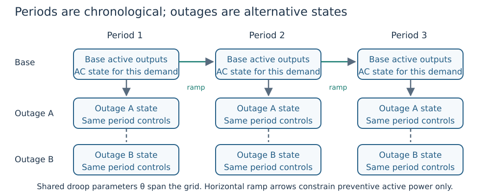

From one equilibrium to secure and multi-period studies
Goal: choose what stays shared before choosing an optimization API. The AC state is $x=(v,\delta,P,Q)$: bus voltage magnitudes/angles and generator active/reactive outputs. Let $\theta$ denote selected curve/equipment design parameters; these are distinct from the AC state. Subscript $c$ identifies an outage scenario, with $c=0$ the base. Subscript $k$ identifies a chronological period. All powers are in pu unless stated otherwise.
One case, several outage equilibria

Figure 1. States differ by outage topology/availability, while parameter sharing and the base-to-outage response policy constrain what can change.
A fixed-curve Study has one base dispatch and a declared contingency list. Each state $x_c$ satisfies its own network equations, device bounds and reactive law. Generator or branch unavailability removes that device's injection or flow. A generator's curve can stay fixed while its Q output changes with voltage.
| Question | Choose explicitly |
|---|---|
| Which devices can fail? | The contingency catalogue, including excluded/unsupported islanding entries. |
| Which active units can respond? | Participation weights, effective capability and declared movement bounds. |
| Can equipment change after the outage? | Preventive/corrective timing, selected devices, absolute bounds and movement budgets. |
| Can the curve change? | A fixed curve stays fixed; shared design selects one parameter vector for the declared training states. |
| What counts as completion? | Required catalogue coverage, native convergence and independent state/policy replay. |
The complete security example runs this coupling on a three-bus network. The SCOPF guide specifies exact API behavior. A ranking merely changes execution order; an unassessed low-ranked outage is not an accepted AC equilibrium.
Understand limit-aware active response
For generator $g$ in scenario $c$, $P_{g,0}$ is base output, $\alpha_{g,c}\ge0$ its normalized survivor weight, $\lambda_c$ the common request signal and $L_{g,c},U_{g,c}$ effective active bounds, all power quantities in pu. The preventive response law is
\[P_{g,c}=\operatorname{clip}(P_{g,0}+\alpha_{g,c}\lambda_c,L_{g,c},U_{g,c}).\]
Clipping is $\operatorname{clip}(z,L,U)=\min(U,\max(L,z))$. Here $z$ is a real input and $L,U$ its lower/upper bounds. Effective bounds intersect equipment capability and declared base-to-outage movement restrictions. Unavailable units have zero output. Zero-weight units hold their base output. Default weights use nonzero effective active-capability ranges among eligible survivors; actual supplied response weights take precedence.

Figure 2. Illustrative upward response. $\Delta P$ is actual output minus base output; $\lambda$ is the request signal. The optimizer can increase the signal until remaining participants deliver the required balance, subject to their bounds.
Once a unit clips, $\lambda_c$ need not equal the sum of delivered changes. Compute actual delivery from the output differences. If headroom is inadequate, the model cannot create missing supply. The weights encode a steady-state sharing assumption, not governor speed or calibrated frequency dynamics.
A corrective active-redispatch study instead bounds each generator's allowed output change directly. Its symmetric limit is a movement allowance in pu, not a ramp rate. Do not confuse this active policy with corrective tap/shunt timing.
Preventive versus corrective equipment
A preventive selected tap has one setting shared across base/outage states where it is available. A corrective selected tap can have a different post-outage setting inside declared absolute and movement bounds. An unselected tap stays fixed. The same distinction applies to selected shunt controls.
API defaults for selected equipment are documented in SCOPF timing. Declare timing explicitly in a study protocol. A library's nothing movement map and an empty map have different meanings: no extra movement cap versus no listed corrective devices. Continuous settings and settled-state permission do not imply physical delays, tap steps, discrete switching or a valid transition trajectory.
Alternative demands versus chronological periods
Independent demand cases have no implied order or ramp relation. A multi-period study has an ordered set $\mathcal T$ of period starts. Each period $k$ has a positive duration $\Delta t_k$ in hours and its own state. Supplied ramp rates $r_g^{up},r_g^{down}$ are in pu/hour and constrain preventive dispatch as
\[-r_g^{down}\Delta t_k\le P_{g,k+1}-P_{g,k} \le r_g^{up}\Delta t_k.\]
$P_{g,k}$ is base active output in period $k$. The final duration weights energy only. Initial/terminal or cyclic ramp boundaries must not be inferred.

Figure 3. Horizontal arrows impose planned base dispatch ramps. Vertical layouts show alternative outages, not simulation time. Shared curves span the specified grid.
The base-operation multi-period objective is active loss energy:
\[E_{loss}=S_{base}\sum_{k\in\mathcal T}\Delta t_k \left(\sum_{g\in\mathcal G}P_{g,k}-\sum_{l\in\mathcal L}P^L_{l,k}\right).\]
Here $S_{base}$ is the power base in MVA, $\mathcal G$ the generator set, $\mathcal L$ the load set and $P^L_{l,k}$ the active consumption of load $l$ in period $k$. Per-unit active power times this base is MW; multiplying by hours gives MWh. Loss includes shunt conductance. It is not fuel cost.
optimize_multi_period is the fixed-equipment base-operation slice. optimize_multi_period_security adds declared outage recourse and its study policies. A base-only profile does not establish security at every period or dynamic security between periods.
A practical study sequence
- Validate a single fixed-control operating point with the worked tutorial.
- Write the control freedoms, capability, response weights and equipment timing.
- Compare supplied curves with a bounded shared design under the same operating limits.
- Freeze the design for the declared evaluation cases; keep any demand-specific preventive dispatch freedom explicit.
- Run the complete required catalogue and replay every accepted result.
- Report unresolved solves, exclusions and resource cost alongside accepted coverage.
These steps explain why adding scenarios changes the optimization problem without turning it into a dynamic simulation or a global-optimality certificate.